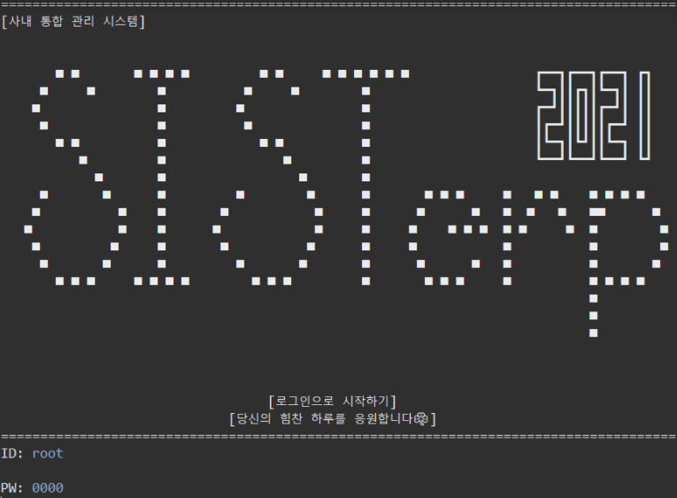

Java Project
파일 입출력 기반의 데이터 처리 자바 콘솔 프로젝트
● 프로젝트명 : 기업전산 관리 시스템 구현

- 기간 : 2021.05.01 ~ 2021.05.11 (10일)
- 개발환경 : Window 10 / JAVA (Language) / Eclipse (Development tool)
- 개요 : 프로그램을 사용하여 기존의 전산 관리 시스템(연차, 게시판, 스케줄, 근태 관리 등)과 유사한 시스템을 이용하는 프로그램
- 목적 : 기존 전산 관리 시스템에 다른 기능을 추가해 편리성과 차별성을 갖는다는 목적입니다.